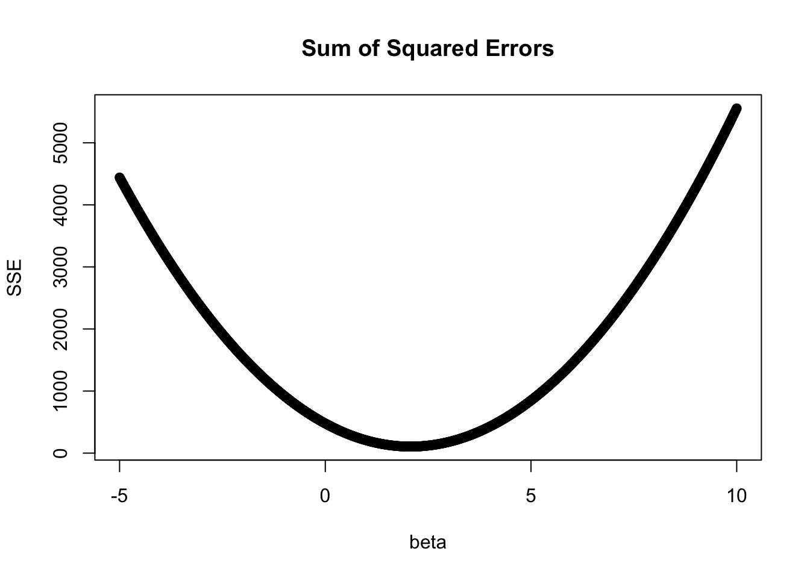

Chapter 2 R Fundamentals
2.1 Functions
R comes with a great amount of built-in functionality. However, in a typical data analysis project, you will quickly find that you need to write your own customized functions to carry out tasks specific to your needs.
One of the best ways to improve your reach as a data scientist is to write functions. Functions allow you to automate common tasks in a more powerful and general way than copy-and-pasting.
To start, let’s assume that we have a vector of data, \(x\) and we want compute the sum of the cubed value for each element. If we only need to do this once, we may not need to explicitly define a function but, rather, can just perform the calculation:
## [1] 3.272486If we need to do this for many different vectors throughout our program, it may be more efficient to write a function to carry out this task. In this case we may write,
## [1] 3.272486We could also assume that we do not have a built in function that computes the standard deviation (of course, there is). We could write this function as,
## [1] 0.9610394## [1] 0.9610394A function has three parts:
The
formals(), the list of arguments that control how you call the function.The
body(), the code inside the function.The
environment(), the data structure that determines how the function finds the values associated with the names.
To further illustrate the possible arguments our functions can take, let’s try to make a function that takes two arguments: the first is a numeric vector and the second is a confidence level. Then, the function returns a confidence interval for \(\mu\) at the desired confidence level. Recall that a confidence interval for \(\mu\) takes the following form:
\[\begin{equation} \bar{x} \pm t^\star \hat{\sigma}/\sqrt{n} \end{equation}\]
## [1] 0.4626294 0.5677198For another example, let’s consider the no-intercept regression model from last class and use a plot of the sum of squared errors for different \(\beta\) values to obtain an estimator (that is, a value that minimizes the sum of squared differences). The function that we want to minimize is:
\[\begin{align} f(\beta) &= \sum_i (y_i - \hat{y}_i)^2 \\ &= \sum_i (y_i - \beta x_i)^2 \end{align}\]
Let us generate some data below and write this function,

This confirms that the \(\hat{\beta}\) found using this method (grid search) is equal to that found using lm(), or calculus!
2.2 Exercises 2
q1(): a function that takes a numeric vector as input and returns the number of elements that are less than 10.q2(): a function that takes a numeric vector as input and returns the range of the elements (difference between the max and the min).both_na(): a function that takes two vectors of the same length and returns the number of positions that have anNAin both vectors. Hint: use the built inis.na()function. Feel free to use the code below to generate test vectors. Your function should return a value equal to the answer variable defined below.skew(): a function that takes a numeric vector argument and returns the skew, using the following definition:
\[\begin{equation} \text{skew(x)} = \frac{1/(n-2) \sum_{i=1}^n (x_i-\bar{x})^3 }{var(x)^{3/2}} \end{equation}\]
You can generate test data as below:
In which case your function should return -0.0146668.
q5(): function takes numeric vector argument and changes each element to 1 if the element is \(>1\) and 0 otherwise.Use code (functions) as well as math to check to see if the following two expressions are equal to one another. When writing code, generate two vectors of equal length (referred to below as \(x\) and \(y\)) and use them as arguments in your function. To check using math, carry out the multiplication in
exp1 and see if you can reduce it to exp2.
\[\begin{align} \text{exp1} &= \sum_{i=1}^n (x_i - \bar{x})(y_i - \bar{y}) \\ \text{exp2} &= \sum_{i=1}^n (x_i - \bar{x})y_i \end{align}\]